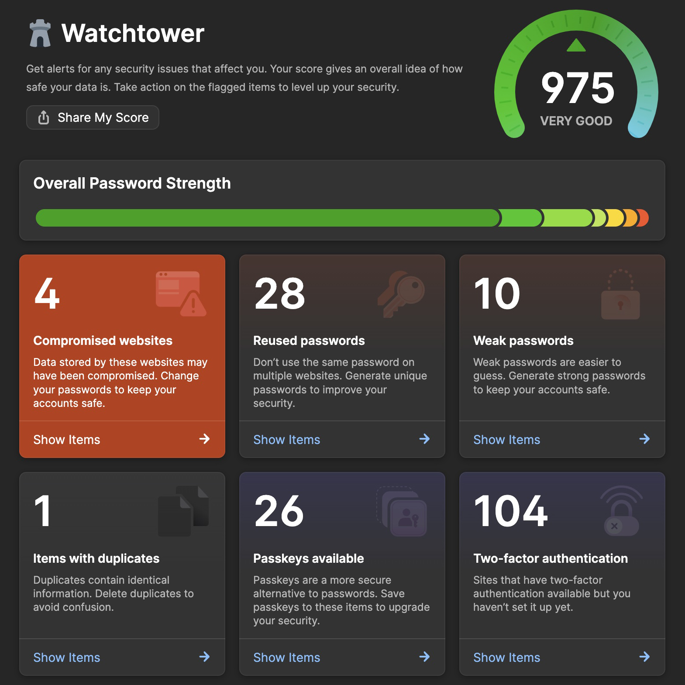
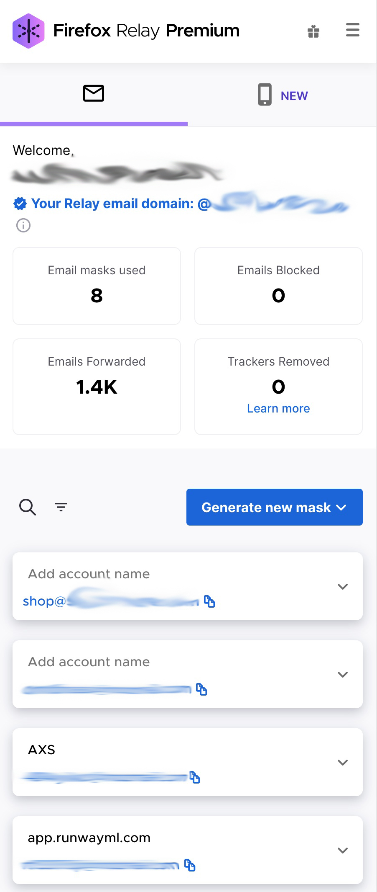
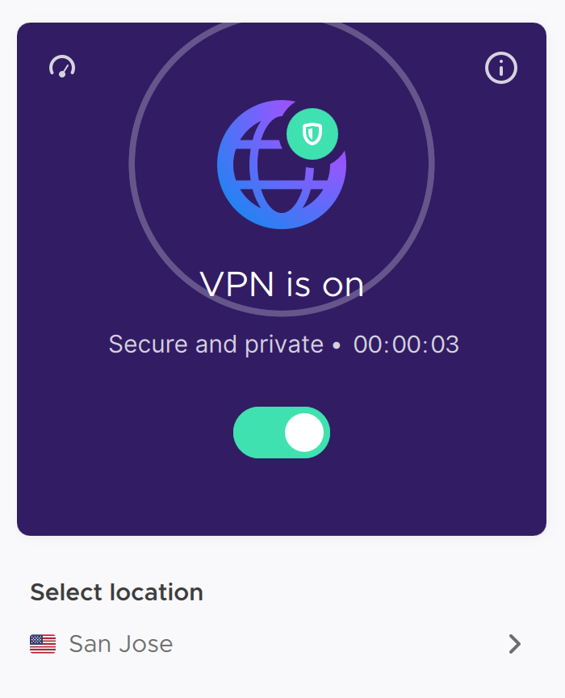

How to be safe on the internet.
If you’re not using a password manager, today is the only day I will tell you to get one. This is your one call to action.
It could take you some time to reset and change passwords, but considering that the process can be done as your services require you to authenticate, rather than attempting to spend a day or two changing all of your passwords at once, it's really not that bad.
I'll briefly cover what I love about 1Password and why you should use it. While we’re at it, though - you might consider getting a few other cheap but related security services.
1Password Manager - If you need help setting this up, just ping me on some social account and I’ll do my best to give you advice. I might even call you and work through it, but no guarantee. But by helping secure yourself, you’re also doing a courtesy to your digital neighbors. One of the greatest features is 1Password's Watchtower. It automatically and anonymously scans all of your passwords against "Pwned Passwords" to give you the following actionable guidance:

Firefox Relay - This is simply an email relay service with some limited ability to group, name, and customize emails. Mine is a little bit of a mess right now, but I'd ideally have defined categories that I use the relay address for. While all it does is forward the email to your primary address, you can terminate the relay at any time and sever the ability to contact you by an offending service or person. If you pay their modest fee for their service, which may be a requirement, I believe you also get their VPN and possibly other services as well. For me, relay is great for signing up to new startup newsletters that I’m interested in, or a game in active development, maybe a record label or shop that I don’t completely trust with an email I can’t easily abandon.
It'll look something like this:

Mozilla VPN - I used to hang out in coffee shops and bars all of the time with laptop, so this made much more sense for me then. Today, it’s still a great travel utility. It simply gives you a private tunnel to the internet on whatever network you’re on. No one's snooping in your mail today. Other use cases include when services can only be accessed in a specific country and you happen to be traveling, or if you require any sort of security with data in your possession.

That's fine Steve, but what do you do to learn about sensitive data leaks containing your information?
Well sheesh, if you don't want to use 1Password (and there are many password manager options I'm choosing to ignore), then you might want to use the free HaveIBeenPwned service to ping you when an e-mail and/or password has been leaked.
Even though I'm on 1Password now, I still use this to be certain I'm aware leaks my data is part of. At this moment I’ve only been following non-relay e-mails, but maybe it’s worth plugging them in as well. You will not get spammed by signing up. If you get an e-mail, and you will, it is simply to inform you that you’ve been "pwned" and provides information to learn about the attack and impacted services.
For example, the latest leak I was part of (it's likely that you were too) was the recent Naz.API breach. Read about it in detail here.
If you like what you're reading, here's your chance to get more of it. I'll never send more than once per week, however notes get published here daily.
Until next time.
Steven